＜マップ改造説明書＞
最初に
この説明書を作りにあたり、あるお二方の協力で色々調べることができました。ありがとうございます。
また、構造体データ・聖魔のチップ画像・Mappy等のソフト等、一部海外の方の解析によるもののおかげで出来ています。
上記お二方と併せ、感謝しつつ使用させて頂きましょう。
自分の改造は様々な物を解析するために試験的に作った物等多く含み、
手抜きだったり、イベント構造が単純になっています。
この解説書が今後改造される方の助け、もとい踏み台になり、面白い改造等が増えたらなと私は思います。
また、私の日本語がおかしいため、一部意味不明なこともありますが、
一度に一気に改造せず、少しずつ改造するのをお奨めします。
ここでは聖魔のフリーマップ以外のマップの解説をしています。封印烈火はマップデータ及びマップチップのみとなります。
ただ、各マップのポインタデータ、部分変化の書式など多く使えます。(むしろ聖魔が流用しているので…)
<7>イベントの条件等は一部異なりますが、ポインタや書式など似ているのでいろいろ試してみるといいです。
それと、イベント等は作品ごとに大分書式が違うみたいですが、似たような感じではありますので、
頑張って解析しながらやってみてください。
<1>付属品
説明書.html…………これです
イベント命令.html………こちらで解析したイベント命令リストです(不完全)。
※以下自作プログラムですが、とても機能がしょぼいです。SFCの改造ツール等の様な高機能は期待しないでください。
Map_coordinates.exe……ユニットの座標LV等を計算するツールです。
mar_converter.exe……抽出したマップをmapwinで読み込み出来る形式に変換するツールです。
mar_conv_Changes.exe…部分変更用のマップをmar形式にするツールです。
mar_conv_Changes2.exe…部分変更用のmarをマップ形式にするツールです。
mapwin14→1411 日本語化.EXE…mapwin14(下記DLサイト)を日本語化し、1411にverupします。
/聖魔要データ……海外のマップチップをリネームした画像と追加用の構造体データが入っています。
/烈火要データ……こちらで作成した烈火用マップチップと追加用の構造体データが入っています。
/封印要データ……こちらで作成した封印用マップチップと追加用の構造体データが入っています。
/フリーマップ用魔物データ…フリーマップの魔物のクラス所持アイテムのパターンを解析したデータが入っています。
/使用したマップデータ…今回説明用に少しだけ改造した14章のIPSとSAVEデータ、改変したマップデータ(FMP)が入っています。
/img……………………説明書の画像部分です。
<2>必要なもの
・mapwin(Mappy) (ttp://www.geocities.com/siliconvalley/vista/7336/mapwin14.zip)
・MAR array inserter (ttp://www.fileden.com/files/2008/1/24/1717946/MAR%20array%20inserter.zip)
・LZ77 Compressor
大体この辺りがあればなんとかなります。
<3>改造元のマップを取得
・まっさらの状態からマップを作ってもよいのですが、敵の具体的な位置等を調べるために
一度改造元のマップを読み込んでおきます。
後でmapwinを2つ起動して比較しながら敵の配置を変えていくときにとても便利になります
今回はエイリーク編14章を題材にしてみます。
(1)構造体の追加
最初に付属の構造体(/聖魔要データ/追加構造体.txt)をStrlingのStruct.defに追加しておいてください。
その後、聖魔のROMを開きます。
構造体編集を開いて、【マップポインタリスト】を開きます。
海外から持ってきたので、名前が英語名ですが、マップデータのところに★マークをつけておきました
変更したい章の★のポインタのうち下6桁をコピーしておきます。
エイリーク編14章は【3E】の0x081A4F44なので1A4F44ですね。
(2)マップデータの解凍と変換
ROMをLZ77Compで開いて先ほどコピーした1A4F44で解凍(Uncompress)します。
でてきたファイルはマップデータなのですが、このままではmapwinで開けないので、
付属のmar_converter.exeにドラッグ&ドロップしてください。
(DOSプログラムなので、直ぐ消えると思います。)
データと同じ場所に14章ならMAP(25-27).MARというファイルが出来ると思います。
(※自分の環境では最初MARファイルがショートカットの.lnkと同じ感じで拡張子が表示されずおかしくなってしまいました。
もし、同じ状態になりましたら、フォルダオプションでMAR拡張子を削除するとよいかもしれません。)
ファイル名の25-27ですが、横幅(X)のサイズが25、縦幅(Y)のサイズが27のマップであることを示しています。
(3)マップの確認
一度マップを確認するためにmapwinで開いてみましょう。
まずmapwinで開く前に変更先のマップがどのマップチップを使用しているか確認します
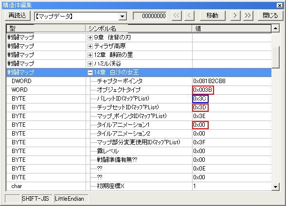
エディタでマップデータを開き編集マップのデータをみます。
オブジェクトタイプ～マップ部分変更使用IDまでは、【マップポインタリスト】のIDになります。
後述解説するのもありますが、基本的にマップチップはオブジェクトタイプ・[パレット]・チップセットID・タイルアニメ
の使用しているIDで判別できます。
14章のチップは、003B [3C] 3D 00.bmpが今回使用するチップになります。
※なお、パレットが[]で囲ってあるのは、同じチップでも色違いだけのマップ(夜間や色だけ違う城)などには、そういう表記にしてあります。
次にMappyを起動して新規で下地を作成します
File→New Mapを出します。
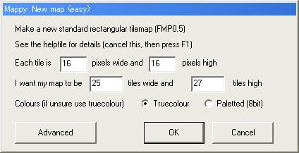
Eeach tileの所は両方とも16で固定です。
次の二つはマップのサイズなので先ほどの25と27を入れてOKを押して下地を作ります。
その状態でFile→Importで先ほど変換したMARファイルを読み込みます。
最初は真っ黒なのですが、先ほどの003B [3C] 3D 00.bmpファイルをドラッグ&ドロップして
ちゃんと表示されるものを確認してください
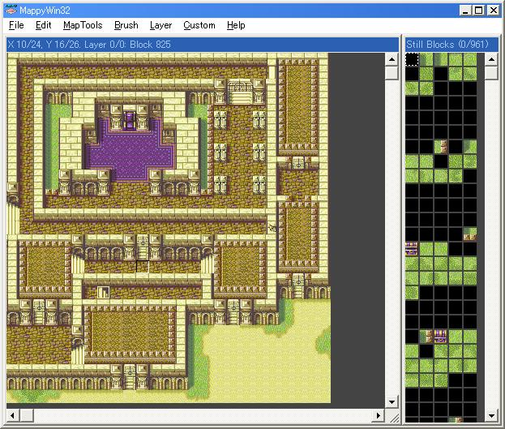
チップセットを間違えて入れ替えてるときに警告が出たら一度新規で開き直した方がいいみたいです。
なぜかチップセットがずれ、最悪エクスポートできなくなるバグ？が発生します。
また、聖魔だけかもしれませんが、15章の砂漠マップは何故か上手く表示されない可能性があります、
そうなったら、ch15用のマップチップを使用してみてください。
<4>マップの作成
(1)mapwinの主な機能と保存
基本的に右のマップチップから選んで左のキャンバスに配置していくのですが、
CustomメニューのMouseButtonsでRight mouseの設定をPick Blockにしておくと、
右クリックでキャンバスからパーツ選択できるので楽になります。
(設定が保存されないみたいなので次開く時は設定し直さないといけないみたいです。)
マップのサイズ変更はMapToolsのResizeMapで変更できます。
マップの位置は番号で決めることが出来るので番号で指定してからリサイズします。
また全体を少しずらすときはLayerメニューのSlide Layerから移動できます。
マップサイズは縦横最大でもそれぞれ60程度にしておいてください。
64以上の座標の大きい場所にはユニットが配置出来なくなります。
またそれぞれ60以下でもタイル面積が約1600(40*40)付近を越えると
様々な不都合が起きるのを確認しています。
マップを移植するときはエクスポートするのですが、保存されていないとできないので、
ちゃんと保存しておきましょう。
マップは独自のFMP形式で保存され、チップセットの画像も含まれて保存されます。
(2)各種オブジェクトについて
扉・宝箱・屋根・村・民家・各種ショップ等のイベントが発生する地形ですが、
まだ調査中なのと、数を増やしたりすると少しややこしくなってしまうので、
なるべく、位置を変えたり消す程度にしておきましょう
また、屋根についてですが、屋根下のマップは宝箱を開けた後のアイコンのように
部分差し替えの要領でおこなわれます。（後述）
(3)エクスポート
今回は大きく弄らず元のマップから少しだけ変更しました。
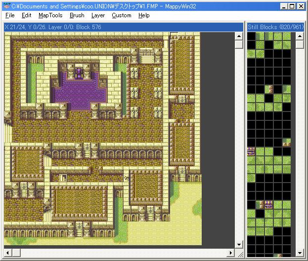
マップをFMP形式で保存されているのを確認したら、FileメニューからExport...を選びましょう。
海外のサイトでも説明されてますが、filenameを指定して、[]Map Arryにチェックを入れてOKを押しましょう。
FMPと同じ場所にファイル名.MARが出力されます。
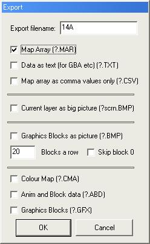
(4)移植するデータの準備
海外サイトの通り、MAR array inserterを使います。
ここで、ROMファイルに改造元の聖魔を選び、直接挿入したいところですが、安全のため以下のやり方でやります。
(直接挿入されるときはMapsizeに縦横のサイズ、Offsetに先頭アドレスを入力されるだけで十分です。
自分は貼り付け位置を変えたりするときのために以下のやり方にしています。)
出力したMARファイルと同じ場所に新規ファイル作成で空の「map.gba」などを作成しておきます。
MAR fileに先ほど出力したMARファイルを選択します。
ROMに空のmap.gbaを選択します。
Map Sizeにサイズを入れます。
(マップサイズに気をつけてください。左上が0,0なのでMappyの編集画面の
『X 0/24, Y 0/26. Layer 0/0 ～』の24と26に1ずつ足した値が各サイズです。)
Offsetは空白のままでいいです。
あとはRUNを実行します
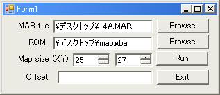
(5)移植作業
Stirlingを開き移植先の聖魔のROMと先ほどのmap.gbaを開きましょう。
まず、空き領域にmap.gbaを挿入します。(この辺りはもう説明は不要だと思います。)
今回は0xFFF000から0x2C0分入れました。
挿入したら、先頭アドレスをメモしておきます。
次に最初に使った構造体の【マップポインタリスト】を開き、★のついてるMapのアドレスを
先ほどのアドレスに0x08をつけて入れ替えます
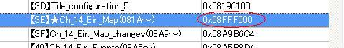
これで、とりあえずマップだけは移植することができたので、ROMを開いて確認してみましょう。
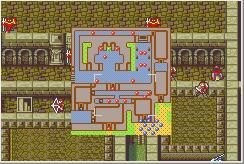
かなりカオスですが一応は変わってますね。
※もし、チップセット(使用するbmp)をかえたのでしたら、<9>章のマップコンディションを先にみてください。
<5>部分変化マップの修正
(1)変化オブジェクトの座標等の確認
敵の配置等をかえたいと思いますが、まずは部分変化を起こす場所や中身を修正しましょう。
まずStirlingを開きマップを移植したROMを開きます。
構造体からまた【マップポインタリスト】を開き、今度は14章のMap_changesが付くアドレスを確認します。
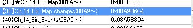
0x08A9B6C4なので、指定アドレスへ移動でA9B6C4を開いてください
ここでまた構造編集をだします。
今度はマップ変化を選択します。(画像の構造体名は名前変える前だったので気にしないで下さい)
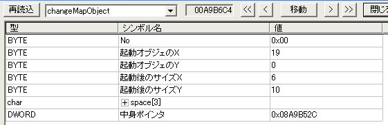
上から順に説明します。
・Noはこのマップで使用するマップ変化の起こる通し番号です。(イベント等で使用されるのも恐らくこれ)
構造体編集画面で移動ボタンの右の>>を押していき、NoにFFが表示されたらそこで終了です。
・起動オブジェX,Yは変化の起こる一番左上の座標で、マップの左上を0,0として計算されます。
ここで変更前のマップをMappyで開き座標を確認するととてもわかりやすいです。
Mappyの座標も左上は0,0で、敵配置や各種イベントも左上を0,0起点としています。
・起動後サイズは、変化が起こったときのマップを変更する横幅と縦幅を指定します。
0,0にすれば変化を起こさないようにでき、基本最小値は1x1です。
・スペース3バイト開けて、中身ポインタですが、これは実際にマップ変更が起こった時に
マップを書き換える内容をしめしています。
このポインタの先頭アドレスから1つのタイルが2バイトなので、上記の起動後サイズのX,Yと2を掛けたバイト分読み込まれます。
上の変化オブジェクトの場合は座標19,0から6x10のサイズで0x08A9B52Cから6x10x2=120バイト分の内容でマップを書き換えるという意味です。
Mappyで見ると赤枠の扉を開けた屋根の部分が該当しますね。
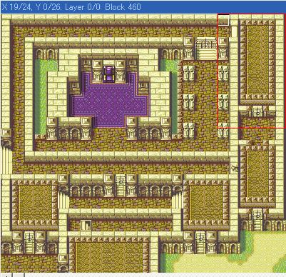
(2)変化後のマップ内容
実際に起動後のマップがどうなるかを確認しましょう。
先ほどの中身ポインタA9B52Cに移動しましょう。
先ほども説明しましたが、一つのマスは2バイトで配置されます。
なのでA9B52Cから6x10x2=120バイト分を選択して右クリックメニューの範囲場所を保存で保存しておきます。
保存したファイルをもう一つのDOSプログラムのmar_conv_Changes.exeに投げ込んであげましょう。
するとChange_MAP(60-1).MARとファイルが作成されます(60は6*10の意味)
(縦横のサイズは部分変化にしか書いて無いので面積を出力するようにしてあります。)
ここでまたMappyを開き新規で6*10の下地を開きインポートしてマップチップもよみこませます。
すると以下のようなマップが表示されるはずです。
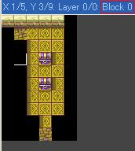
微妙なマップがでてきますが、画像で選択してるBlock 0というのは透明マップを意味し、
マップ変化が起こったときにその部分は変更されないようになります。
実際に黒を透明として先ほどのマップに重ねてみましょう。すると、
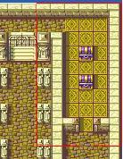
ちゃんと屋根がなくなったときの画像が表示されますね。
次にこの内容をかえるのですが、マップを変えたときのようにMARにエクスポートまでやってください
エクスポートしたMARを今度はmar_conv_Changes『2』.exeに投げてください。
Change_MAP.gbaというのがでてくるのでバイナリで開き先ほどの場所に上書きしましょう。
サイズとかを変更するときはもちろん、空き領域に貼り付け、アドレスをメモして、先ほどのポインタを書き換えましょう。
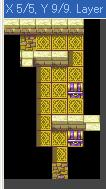
今回はこんな感じで宝箱の位置もかえてみました。
屋根の中身を変えたりするのは大変ですが、宝箱の位置や屋根をずらしただけとかなら起動オブジェのX,Yを
ずらしてあげるだけでいいです。
屋根の中の宝箱をずらしたので、No0x07と8のX,Yをそれぞれ、23,4と23,7に変えます。
また屋根そのものや壊れる壁の位置もかえたので。それぞれ中身や位置をずらします。
壊れる壁＋扉で開く屋根の場合は同じ屋根でもそれぞれ開いた時の状態をつくるようになっています。
変更後のマップ下の屋根＋壁を使って空き領域を使用したマップ変更をやってみます。
屋根の方は下にずらしただけなので、No0x03を下にずらせばいいです。
ですが、壊れる壁の方は大きくかえないといけませんね。
まず、屋根の方のデータをもとに扉を含まないマップを作ります。
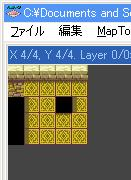
それをMAR->GBA形式までもっていきます。
あとは空き領域に入れて、先頭ポインタをメモして、(ここではFFEF50)
壁破壊のNo0x09の位置とサイズ、そして中身ポインタをメモしたものにしましょう
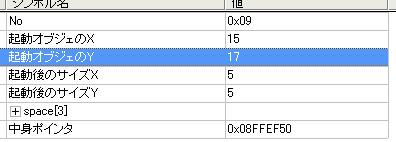
※上の変更後のマップをみれば分かるのですが、宝箱の位置を透明にしていますが、
扉を開けずに、回り込んで、先に壁を破壊すると、宝箱の位置に屋根だけが残る
ということが起きてしまいます。なので、変化が2回起こりうる場所では
別の変化が起こるオブジェクトをいれるのはやめた方がよさそうです。(後から気づきました。)
また、ROMで確認それぞれ確認したいところですが、扉・宝箱等別でイベント条件がきまっているので、
ここでは壊れる壁しか確認できません。
なお、新規で部分変更を作成される場合、後で変化が起こる部分(屋根の中の宝箱等)は、
Noがその屋根より後ろになるように設定してください。後ろの部分変化が先におきると、
それより前の同じ座標を含む部分変化が起こらない場合があります。
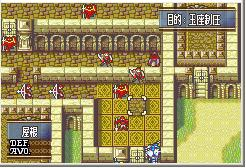
<6>敵の配置変更とイベント時の座標変更
マップ変更でおそらく一番だれる作業です。
あれこれと、配置変更とかしてじっくり考えながらやっていきましょう。
特にイベント時の座標変更は戦闘スタート時の最終的な場所とかにもなる場合があるのでしっかりと変更してください
移動先が対象クラスで進入不可だった場合は、最悪フリーズします
(1)LVや初期配置
まず、敵の持ち物やクラスを変えたことある人なら分かりますが、
配布されている構造の各章の設定データを開きます。(ここでは14章A)
例えば、敵将のカーライルを見てみましょう。
クラスや持ち物は分かると思いますが、
LV0（01青23緑45赤）LV1（89青ab緑cd赤）:5C
配置前座標_L:49
配置前座標_B:01
となっており、LV11の座標9,7(オープニング初期値)のデータにはとてもみえませんね。
じつは、LVデータの方には成長率や所属、座標には魔物、ドロップ関係と一緒にされており、
すこしややこしくなっています。
なので、付属のMap_coordinates.exeを開きましょう。
(本当は所持アイテム等いじれる他のFEみたいなマップツールも作りたいのですが、私の力不足です。)
まず、座標から見ていきます。
配置前座標_L:49
配置前座標_B:01
のリトルエンディアンなのでデータは0149になります。
ツールのデータから座標に0149を入れると X:9 Y5 になります。
それでも9,7ではないのですが、おそらくはイベントの方で座標を指定している特殊なパターンだと思います。
カーライルの場合の座標は後のイベントで書きます。
次にLV等ですが、5CなのでデータからLVのところに5Cを入れます。
するとLV11,所属:敵軍,成長率はユニット依存ということが分かります。
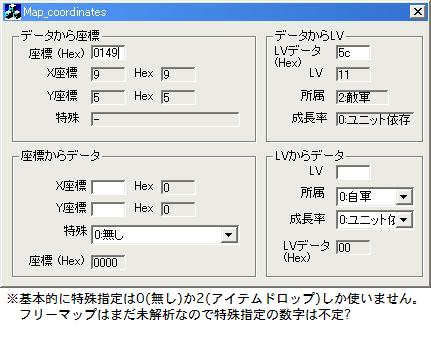
下の座標やLVからデータに変換するのは使えば分かると思いますが、
軽く補足説明すると、X,Yは0,0を左上として右下にいくほど数が大きくなります
特殊はアイテムドロップや、フリーマップの魔物系(ランダムでクラスや持ち物が変わるあれです)の設定です。
成長率は、雑魚なら主にクラス依存で、ボスや自軍のキャラクターは基本ユニット依存になります。(あくまでLVに対する初期値です。)
カーライルはかなり特殊なパターンなので他のイベントのキャラクターをみてましょう。
たとえば、1ターン目終了時のイベントのケセルダとリオンをみてましょう。
カーライルから少し下にいくとケセルダとリオンがならんでいます。
ケセルダの初期位置はD1 02なので02D1でX17 Y11と分かります。
次に移動後座標指定というの４つならんでますが、これはアドレスを示していて、08910038となります。
今編集してる場所から少し上の場所を示しているのですが、実際にデータを見てましょう。
CA 02 00 00 FF FF 00 00とならんでいます。この8バイト分がイベントや増援で出たユニットの移動先とかになります。
後ろの6バイトはまだどういう内容なのか解析中ですが、前の2バイトは座標で確定です。
02CAをツールで見るとX10 Y11となります。
ですが、ケセルダはX10 Y7で待機して会話しています。
ここで先ほどの08910038を差している移動後座標指定の1バイト前を見てみましょう。
そうすると02になっているのが分かると思います。
これは08910038から2つ分の移動経路を使用するという意味を示しています。
移動経路は00が無しで01以上で出現後移動なのですが、
01以上になっていると、かりに出現場所に他のユニットがいても問題なく出現して
移動し、さらに移動先にユニットがいても、座標をずらして待機することが出来ます。
逆に00になっている場合はほとんど砦増援などにしか使用されず、
急に沸いて、さらに出現位置に他ユニットがいると出現すらできないので注意しましょう。
よって次のCA 01 00 00 FF FF 00 00をみてみると。すると、これがX10 Y7になっています。
リオンの移動後座標指定を見てましょう。移動後座標指定は02 座標アドレスは08910048になっています。
調べると、リオンもX10 Y11を経由して移動しています。
ただ、イベント中のキャラクター移動や会話の終わった後のケセルダとリオンが帰る座標は、
カーライルと同じくイベントの方で指定されてるようです。
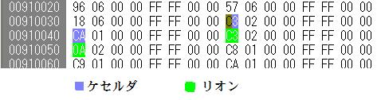
なお、経由してとありますが、基本的に最短距離を自動で計算して、移動してくれますが、
その停止位置が通行不可能だとやはりフリーズの原因となります
また、同じ付近に出る増援等は基本的に初期位置が同じ場所になっており、移動後座標を見てそれぞればらけて配置されます。
例えば、22,26 23,25 24,24にでるソシアルナイト3体ですが、どのソシアルナイトも24,26に登場し、
座標移動指定先でそれぞれの位置に移動します。
<7>イベントの条件設定
いよいよ、イベント設定なのですが、まだ理解していない部分がほとんどなので、
ここから先は憶測で書いていきます。
(1)イベント部分の確認
まず、各マップのイベント部分がどこにあるかを調べます。
構造体を開いて先ほどの章のユニット配置を開きます。
すると一番上にspace[9502984]等あるので、16進数に変換して、910108として08をつけて
08910108を8桁のリトルエンディアンにして全体検索します。(08 01 91 08)
するとA5B8FCでヒットするので、その辺りがイベント周りとなります。
そこの場所から0x28前あたりの00 00 00 00以降にポインタがずらっとならんでいます。
各ポインタの指してる場所はそこから少し上からならんでいます。
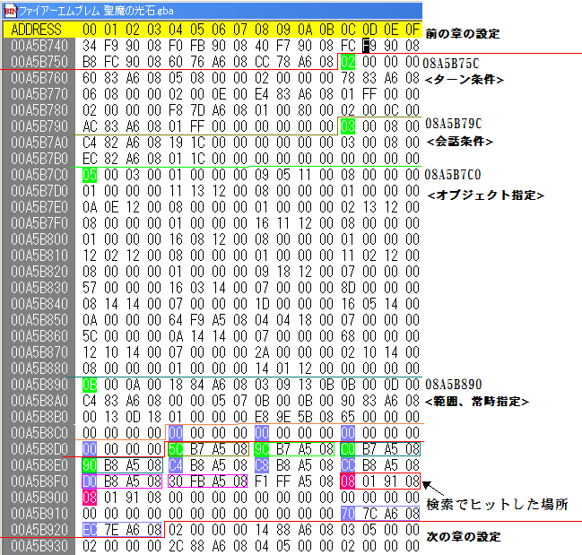
まず自軍の初期配置「08910108」は二つ並んでいます。
主な条件指定はA5B8D4からの4つのポインタだと思います。
この場合ですと[08A5B75C][08A5B79C][08A5B7C0][08A5B890]です。
完全な憶測なのですが、前から([]の中は使用される条件番号)
・[08A5B75C]ターン条件[02]
・[08A5B79C]はなすコマンドの会話条件[03]
・[08A5B7C0]制圧ポイント、宝箱、扉等々のオブジェクト指定[05,06,07,08,0A]
・[08A5B890]範囲条件及び、勝利条件などの常時条件[0B,01]
※先頭が01ではじまるイベントですが、ゲームオーバー、敵全滅、ボス撃破、特定条件増援など
ありますが、一部まだ不明瞭な所もあります。
また、画像のその他のポインタの説明をしておきます。
初期配置ポインタから12バイト前の08A5B8D0がダメージ床などの判定マップがある場所になります。
座標など書かれていますが、面倒なので今回は解析していません。時間あったらまたやります。
その後ろの08A5FB30がシューターの配置になります。
ポインタ先の中身は
01 [XX] [YY] [ZZ] 00 00(X座標Y座標にZZ(35～37)アーチの種類)
01 02 0A 35 00 00 二つめ
00 00 00 00 00 00 終了用の区切り
初期配置ポインタから下に0x20分降りると08A67C70と08A67EECがありますが、
これが章の開始イベントと終了イベントになります。
基本的に玉座の場合の00 00 00 01が終了イベントになります。
ほかのボス撃破などは常時指定の方にも書かれていたり、やや不定です。
(2)ターンについて
まず最初に、08A5B75Cに移動して構造体のイベント発生条件を選択してください。
この構造体ですが、例のごとくまだ未解析の部分がほとんどなので、あくまで目安にしかなりません。
注意!!構造体の各データは16進数で表示されるので各座標、ターン等16進数にして入力してください。
まず先頭に02がくる条件ですが、おそらくターンが条件だと思います。
増援や、各種イベント、防衛マップの終了条件、ターン経過による敵思考の変更等々だと思います。
まず、一つめですがイベント内容ポインタというのが実際に起こる内容で、また後で後述します。
02の2バイト後ろにフラグ条件が来ます。
フラグ条件は、基本的にイベントによってオン(逆かも？)にされたフラグをオフにして一度実行させる命令だと思います。
基本的にターンのみならこの場所は00が入っています。
ですが、条件増援の場合はターン条件が01～FF(∞？)となり、どのターンでもフラグがあれば処理されるという意味になります。
イベント内容は増援などのイベントを示しているポインタです。
次にイベント内容ポインタの次の1バイトが実行開始されるターンです。
次の1バイトは実行終了されるターンです。
次の1バイトは00で自軍、40で友軍、80で敵軍の開始直前(直前なので、BGMは指定前のBGM)におこります。
最初のターン条件を例に上げると、自軍のターン5～8ターン目に0x08A68360の内容が実行される。
となっているので各攻略サイトを見るとおそらく「5ターン目からの階段よりアーチャー1体」
の増援指定だと思われます。
また、上から3つめのターン条件は01～FFとなってますが、フラグ条件に0Eが来ているので、
0Eフラグがある時にのみ増援ということになります。
E4 83 A6 08はシャーマンが左から2体でてくるものなのでおそらく座標(0,0～5,7)に進入した場合の増援になります。
※なお、当然ですが、敵は50体までなので、それを越えると増援は現れないので注意しましょう。
(3)会話条件
03から始まるのが会話条件になります。
会話条件に使用されるバイト数はやや特殊で、通常の条件の後ろに00 00 00 00が何故かくっつきます。
ですが、基本は同じです。
03の2バイト後ろは使用されるフラグです。
このフラグが無いときは会話が発生され、会話イベント実行後はこのフラグを見て会話が発生するかが決まります。
イベント内容は単純な会話から寝返り等入れるとそれっぽいです。
イベントの後ろの2バイトはキャラクターIDになっており、
誰から誰にの順番で書かれています。
なお、片方からしか条件がないので、味方ユニット同士の場合は、同じフラグ・同じイベントで誰から誰にを入れ替えた条件が
もう一つ必要になってきます。
(4)オブジェクト関係
ここでは、玉座、宝箱、村、家、ショップ、等々こちらからアクションを起こす物は基本的にオブジェクトと呼ぶことにします。
08A5B7C0に移動して先ほどと同じ構造体を使ってみましょう。
ここで使用される主な命令は05,06,07,08,0Aだと思います。(まだ調査不足なので他にあるかもしれません。)
順に説明します。いずれもポインタの下の2つデータがイベントが発生するX座標とY座標が入っています。
あと、Y座標の下のデータも必要で、11制圧コマンド、16武器屋等々一緒に指定する必要があるみたいです。
また、各イベントを移動等するときは必ず、そのマスがそのイベントにあった地形になってるか確認してください。
秘密店以外は、例えば宝箱がない地形に宝箱を指定してもおそらく宝箱のコマンドがでません。逆場合も宝箱を開ける動作だけで終わります。
また、村、宝箱、扉など1度しか実行しないものでも基本的にフラグは条件にしかなりません。
これは、部分変化オブジェクトを利用していて、部分変化のNoの若い順から、その座標を含む部分変化が実行されます。
よって、宝箱なら空宝箱、村なら閉じ村といった感じに地形を利用して、イベントの再使用を防いでいるのです。
座標を移動する前に、Mappyを二つ起動して変更前のマップと変更後のマップを開いて座標を確認しながら作業しましょう。
・05…主に玉座や民家に使われる命令だと思います。
いくつかパターンはありますが、玉座はイベント内容が00000001で民家はイベントポインタが設定されています。
玉座の00000001ですが、これは章の終了イベントが実行されることを示しています。
また、訪問村の中心値に05イベント(Y座標下に20が設定されている。)がありますが、これは山賊などが襲う目標だと思います。
Y座標の下のデータは、10:民家 11:制圧 20:村の中心
・06…訪問村の入り口に設定されています。
会話内容や仲間やもらえるアイテムはイベントポインタ先を参照すればよく分かると思います。
Y座標の下のデータは、10:民家と同じでいいみたいです。
・07…宝箱の命令に使われています。
宝箱はイベント内容ポインタに入手するアイテムやお金が設定されています。
またY座標の下のデータは、14:宝箱
・08…扉の命令に使用されています。
イベント内容ポインタは00000001です。
またY座標の下のデータは、12:扉
・0A…お店の地形に使われています。
イベントポインタの先にアイテムデータが並んでいます。(00 00区切りです。)
またY座標の下のデータは、16:武器屋 17:道具屋 18:秘密店(要ﾒﾝﾊﾞｰｶｰﾄﾞ)
お店に関してはどの地形でも表示できますが、16,17はちゃんとお店マップにしておくのが良心的です。
今回は扉の位置や宝箱を移動したのでそれぞれ移動しておきます。
(5)範囲、常時条件
□0B範囲条件
08A5B890から構造体をみればわかるのですが、0Bから始まっていると思います。
おそらくですがこれが範囲指定となります
イベント内容ポインタはそのままポインタが入ります。
その下から範囲の左上のX,Y 範囲の右下のX,Yの4バイトで形成されています。
当然ですが、矩形しかつくることができません。
また、フラグ条件は、その範囲のイベントを1度しか使用させないためのフラグになります。
このフラグを使用していないと、ユニットが入る度に実行されてしまいます。
範囲指定は、エリア突入時の増援、接近による突撃開始、指定到達マップ等に
使われると思います。
また、範囲条件のイベントは非常に設定が難しいです。
そのままだと、プレイヤー以外にも反応します。
増援などの場合は章の開始イベントでフラグを設置・ターン条件でさらに設置等しないといけません。
このマップでは最初の指定範囲選択は0B 00 0A 00 18 84 A6 08 03 09 13 0Bなので、
3,9～19,11の下のエリアに入ったら08A68418のイベントを起こすようになっています。
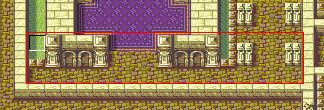
□01常時条件
常時条件は自分もまだ未解析な部分がおおいです。
基本的には何ターン続けてみたいなのが少しやっかいっぽいです…
それ以外はボス撃破条件、主人公死亡によるゲームオーバー条件などが当たります。
このマップでは01 00 00 00 E8 9E 5B 08 65 00 00 00だけですが、
これはフラグ65がある時に085B9EE8(ゲームオーバー)が実行されるという意味です。
65フラグは主に主人公が死亡時にオンになるフラグですが、
この辺りは後述の死亡時の台詞とフラグ関係で指定されている部分になります。
ボス撃破によるクリアはフラグが02になり、イベントポインタが章クリアになっていると思います。
イベント発生条件もまだ調べるところが多いので、大きく変えるなら色々試行錯誤しないと難しいかも知れません。
ターンを変えてみる、範囲をかえてみる、イベントポインタを入れ替えてみる等で、どうなるのか比較するのもいいです。
<8>イベント内容
ここから先は未解析の情報がとてもおおいです。
基本的には元のマップのイベントを座標やメッセージ、アイテム等を変える程度にしておいた方がよさそうです。
また、テキスト変更ツールはここで検索するときに大変役に立ちます。(神ツールに感謝感謝)
(1)章のオープニングイベント
まず、章イベントに入る前にですが、14章のようにオープニングイベントの時に一度城の外の砂漠マップがでてきます。
が、実はこのときのユニット配置や、マップはまた別の章として扱われており、それぞれ変更しないとなりません。
この辺りは変更しなくても、戦闘マップに影響がほとんどないため、今回は割愛します。
具体的に始まるのは14章ですと、カーライルが「イシュメア様・・」としゃべるところからです。
前述もしましたが、特定のユニットのマップの座標はイベントの方でも変えられてしまいます。
なので、特定の位置やマップを大きくかえるときはこの作業が必ず必要になってきます。
(この作業は解析があまりできていないためかなりデバッグを必要とします。
あらかじめイベント周りに障害物を置かない等したほうが楽かもしれません。)
まず、どのあたりからイベントがはじまるのか探すところから始まります。
最初に章開始イベント(08A67C70)まで移動しましょう。
ここで、マップが切り替わって最初の会話の「イシュメア様・・」をテキストツールで検索してみます。
すると、0A44ということがわかります。
ここで検索画面を開き、[20 1B 44 0A 20 1D 00 00]で検索してください。
すると少し下あたりで引っかかるとおもいますが、それがイベントシーンの会話命令です。
ここでためしに、44 0Aを32 0Cにしてみると、カーライルの会話ではなくなります。
また4バイトくらい前の20 12 [26] 00は曲変更を示していて26をかえると曲も変わります。2Aにでもしてみましょう。
そして、また「前」検索で[40 05 0B 00]を検索しましょう。
これが、画面切り替え時の座標命令等になります。
形式は[40 05 0B 00 XX 00 YY 00]の形でXX,YYに画面を移動された状態で切り替わります。
(画面移動系のXX,YYは中心地？とかでもなさそうなので、数値を入れ替えて様子見してください。)
まず、カーライルの座標ですが、前述のユニット初期位置でも9,7は存在せず、また移動後座標も000000でした。
そこで40 05 0Bのところから順にみていくと…52 00 09 07というデータが見えてくると思います。
実はこれが正解で、52はカーライルのユニット番号 09 07はそれぞれ座標になっているのです。
ちょっと工夫して、8,6にしておきましょうか。
そして、会話が始まる前にカーライルは一歩進んでいますが、これも命令にあります
次の行に42 2F 10 00 52 00 03 00とありますが、これが進む命令です。
形式は42 2F [10] 00 [52] 00 [03] 00 [52]が[03]の方向に[10]の速度で1マス移動。
なので今回はカーライルを左にずらしたので、右に移動するようにするために03を01にしておきましょう。
会話が終了し準備画面にはいるのですが、カーライルは既に移動されています。
なので会話の部分から次の行をみると40 2F FF FF 52 00 08 07がありますね。
よってこの8,7が、カーライルの1ターン目の座標となるのです。
※改造後の画面です。
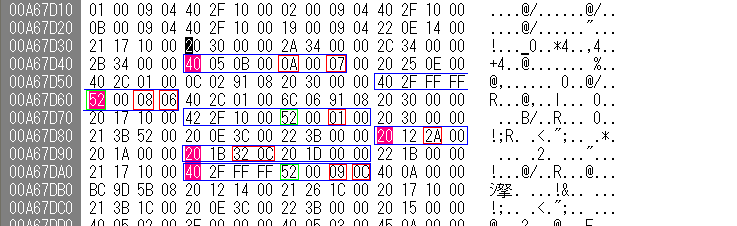
では、敵の1ターン目のイベントのケセルダやリオンはどうなっているのか見てみましょう。
まず、前述のイベント発生条件のところのターン条件の所で1ターン目に発生するイベントがどれか調べます。
するとイベント内容が0x08A67DF8の01 00 80 00で1ターン目の敵に発生するイベントがあるのがわかります。
一番最初の28 26 09 07は画面移動命令で、X9,Y7に移動させます。
次に、ケセルダとリオンが出現します。
40 2C 01 00 [94 06 91 08] 20 30 00 00で、[]の中のアドレスからユニット情報を読み込みます。
(増援指定もそうですが、読み込むときはデータが00で並んでいるところまで読み込みます。
構造体の各章設定で時々空白があるのは増援指定のためです。仮に増援と増援の間に新しいユニットを増やすと
間の前の増援がわくときに後ろの増援が全部でてくるようになります。)
ケセルダとリオンが移動してくるのですが、そこはユニット配置で指定できるのでここでは割愛します
21 3B 53 00でケセルダにカーソルが点滅します。(以下点滅命令は省略します。)
会話が始まり、少しキャラが動き、会話、そしてまた移動なのですが
まず会話が20 1B [46 0A] 20 1D 00 00でケセルダの「ようカーライル～」といっているのがわかります。
次の行を見ると41 2F 00 00 53 00 CB 00とあり、53はケセルダ,CBはイシュメアなのでこれがケセルダをイシュメアの位置に移動させる命令というのが分かります
あとは順に追っていきましょう
42 2F 08 00 CB 00 02 00 イシュメアを下に移動
42 2F 00 00 52 00 01 00 カーライルを右に移動
20 1B 47 0A 20 1D 00 00 会話(0A47)
42 2F 00 00 52 00 00 00 カーライルを左に移動
41 2F 00 00 53 00 CB 00 ケセルダをイシュメアの座標に移動
20 30 00 00 2F 34 CB 00 イシュメアをマップから削除
40 2F 00 00 53 00 09 08 ケセルダをX9,Y8に移動
20 1B 48 0A 20 1D 00 00 会話(0A48)
41 2F 00 00 53 00 40 00 ケセルダをリオンの座標に移動
20 30 00 00 2F 34 40 00 リオンを削除
40 2F 00 00 53 00 11 0B ケセルダをX17,Y11に移動
40 2F 00 00 52 00 09 05 カーライルを X9,Y5に移動
40 2C 01 00 D0 06 91 08 20 30 00 00 アーマー部隊増援
章のイベントはこんな感じで、特にイベント変える予定がないのなら座標だけ変えると良いでしょう
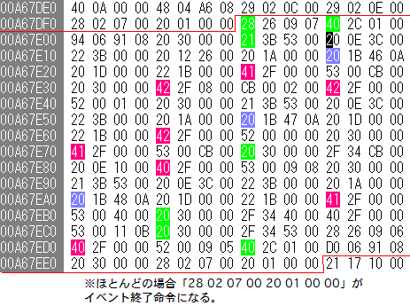
赤が移動系、青が会話、緑がその他のイベントです。
イベントは最小単位が4バイトで、それが1つ～4つくらいならんでイベントを形成している模様です。
(2)増援イベント
基本的には上の章イベントとかわらず、
40 05 02 00 [XX XX XX XX] 40 0A 00 00 D4 03 A6 08のかたちになっています。
アドレスは章データのところ付近から持ってきて00が並ぶところまでユニットを読み込みます。
増援の数を増やすときは空き領域に移した方がいいかもしれないです。
また、増援を増やすときは移動後座標に問題がないかもチェックしましょう
例えば、前述のソシアルナイト×3を6体にしてみましょう。
まず、ソシアルナイトがでるイベントは[02 00 00 00 78 83 A6 08 01 32 00 00]
(前述で1-50ターンに変更されています。)
イベントポインタが08A68378なので、調べると
[40 05 02 00 1C 06 91 08 40 0A 00 00 AC 03 A6 08 28]ですね。
さらに0891061Cをみるとソシアルナイトが3体設定されてるのがよく分かりますね。
80 05 00 6D 98 06 00 01 20 00 91 08 14 00 00 00 00 00 09 00
80 05 00 6D 98 06 00 01 28 00 91 08 14 00 00 00 00 00 09 00
80 05 00 65 98 06 00 01 30 00 91 08 1C 00 00 00 00 00 09 00
空き領域(ここではFFEE00にします。)に６体分入れておき、(うち前の3体は使い回し)
そのうしろに20バイト分の00を入れておきます。
また、コピー元のソシアルナイトから移動後座標のデータ(8バイト)をコピーします。
まず座標を被らないように設定しなおします。(24,25 23,26 24,26)
計算ツールで座標をデータ化してXX XX 00 00 FF FFの形で空き領域に3体分入れます。
そして先ほど追加した3体の移動後座標を3つの移動後座標のアドレスで書き換えます。
最後にイベント部分の1C 06 91 08を00 EE FF 08にすれば増援が6体出現します。
(出ないときは50体制限や座標が間違ってないか確認してください。)
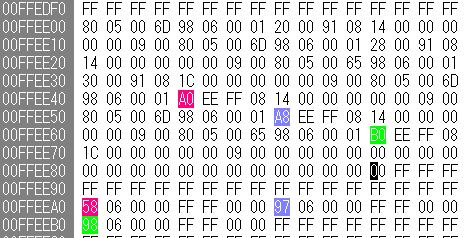
追加したソシアルナイトの移動系座標が各色に対応しています。
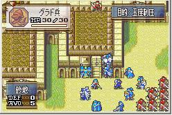
この説明ではイベントの詳しい内容は省きます。
なお、自軍のユニット初期配置は条件などの所にありますが、
イベント時の自軍ユニットの位置、敵の初期配置などは全部イベントで呼び出されているので注意してください。
各章のユニット配置の区切られている先頭のユニットのポインタなどで検索すると良いでしょう。
<9>マップコンディション
本来ならマップ編集する前に書くべきでしたが、ここは場合によってはやらなくてもよいので、
番外編みたいにしました。
ここでは主にマップにつかわれるマップそのものや画面の初期座標、マップの天候や、状態、BGMなど設定できます。
構造体から【マップデータ】を開き14章をみてみましょう。
また、まだこちらで理解できていないところは(未)とつけておきます。
また、海外の解析を使用させて頂いていますが、一部翻訳がおかしかったり、？？な部分もあります。
・チャプターポインタ(未)…ポインタになっておりポインタ先にはASCIIでE14等書かれています。
L:序盤,E:ｴｲﾘｰｸ,I:エフラム,T:塔,R:遺跡だと思います。
・オブジェクトタイプ…数値を変更すると、マップがおかしく表示される可能性があります。
チップセットを変えるときは一緒にかえないといけないかもしれません。
・パレットID…マップポインタリストのIDです。
チップセットに使われるパレットです。
・チップセットID…マップポインタリストのIDです。
具体的なマップチップセットです。まだチップセットの中身そのものは未解析ですが、
他のマップのデータをもってくることで、マップをかえることが出来るとおもいます。
・マップポインタID…マップポインタリストのIDです。
ここはちょくせつマップポインタリストの方でアドレスを変えたので、ここでは変えなくてもいいです。
・タイルアニメーション1,2(未)…おそらく、水や火等グラフィックがアニメーションする場合の指定です。
※チップセットを変えたときはオブジェクトタイプ、パレットID、チップセットID、アニメIDを変更しないとなりません。
bmpにオブジェクトNo [パレットNo] チップNo タイルアニメNoの一例がのってますので参照してください。
オブジェクトだけ違うマップからもってくるとか色々出来ると思います。
試行錯誤してみてください。
・マップ部分変更使用ID…マップポインタリストのIDです。
前述のマップの部分変更がおこなわれるポインタのIDです。
・霧レベル…0～(基本値3)
ここの数値を1以上にすると索敵マップになります。
ただし、索敵マップにするとイベント部分でも真っ暗になり、
敵が見えない状態で、敵の会話が起こります。索敵の状態をかえるイベントがあるので随所入れると良いでしょう。
また、1以上の数値は、盗賊等の索敵補正以外のキャラクターが見える範囲を指定できます。
・戦闘準備有無?(未)…翻訳では戦闘準備画面の有無らしいですが、イベントで準備画面は設定されています。
恐らく、輸送隊の使用有無でしょうか？
・初期座標…このマップに切り替わったときの初期座標です。ただし、イベントの方で設定されてない場合のみです。
マップの位置とか変えた場合でかつ、イベントで設定されていないとき、
これを設定しないと、だれも居ない場所でイベントが進んでしまいます。
・天気…0-7
聖魔ですと0晴れ 1雪 2吹雪 4雨 5ﾏｸﾞﾏ 6砂嵐が使えます。
飛行系などの移動コスト増加等はありますが、地形はあくまで地形なので、
雪を降らせても平原は平原のままで処理されると思われます。
・戦闘背景ID…数値
アニメ設定を2にしているときに使用される背景です。
詳しい値は色々変えたり、他のマップを参照するといいかもしれません。
・フェイズBGM1,2…曲番号
各フェイズに使用される曲番号です。
2はどの条件かは分かりませんが、基本1と同じ設定でいいです。
・壊れる壁のHP…数値
壊れる壁のHPを設定します。また、HPはそのマップ共通です。(すべての壊れる壁が変わります。)
・クリア条件等…マップや状況で表示されるクリア条件です。
もちろんですが、あくまで表示だけです。
・特殊表示および、ターン数表示…
特殊表示を01にすると残り敵残数、02にするとターンカウントが表示されます。
また、ターンカウントのときはターン数表示を変えると数字がかわります。
もちろんですが、あくまで表示だけです。クリア条件は各マップの条件を変えてください。
他の項目は英文を見れば大体分かると思いますが、数値が未解析なのでどうなるかはわかりません。
バックアップをとりながら試行錯誤してみてください。
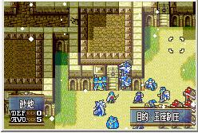
<10>死亡時台詞とフラグリスト
ここではユニット撃破時の会話とフラグの編集を載せておきます。
台詞に関しては問題ないと思いますが、フラグはボス撃破などの条件になっているので、
勝利条件を変えるときはとても重要な物になります。
まずリストは08A5EE70から始まっています。
1つの条件は12バイトで構成され最後は「FF FF 00 00 00 00 00 00 00 00 00 00」となります。
まずは、序章のオニールとエイリークを見てみましょう。
68 00 FF 00 02 00 D7 08 00 00 00 00
01 00 FF FF 65 00 E3 0B 00 00 00 00
の様な感じになっており、書式は
[ユニットID] 00 FF [章ID] [フラグ] 00 [会話2バイト] 4バイトスペース になります。
よって、
オニール(68)は00(序章)のときに、08D7をしゃべり、フラグ02をオンにして死亡する。
エイリーク(01)はいつでも(FF)のときに、0BE3をしゃべり、フラグ65をオンにして死亡する。
と言う風になります。
基本的に前に来ているのが優先されます。
章がFFの場合は基本的にプレイヤーユニットに使われます。
<11>交戦時台詞とフラグリスト
ボスなど、交戦時の台詞もフラグとセットで管理されています。
08A5E7E0からリストが始まっています。
また、フラグは02がボス撃破用、65が主人公キャラクターや防衛ユニットに使用されます。
先頭から少し見てみましょう。
45 00 02 00 40 00 00 00 CA 08 00 00 00 00 00 00
00 00 68 00 00 00 01 00 D6 08 00 00 00 00 00 00
68 00 00 00 00 00 01 00 D6 08 00 00 00 00 00 00
00 00 46 00 01 00 01 00 F5 08 00 00 00 00 00 00
46 00 00 00 01 00 01 00 F5 08 00 00 00 00 00 00
～
FF FF 00 00 00 00 00 00 00 00 00 00 00 00 00 00
1つの条件が16バイトで構成されており、書式は
[攻撃キャラクター] 00 [反撃キャラクター] 00 [マップID] 00 [フラグ] 00 [会話2バイト] [スペース6バイト]となります。
攻守が逆のパターンがある場合はもちろん、フラグと会話そのままでキャラクターを入れ替えた物がもう一ついります。
また、キャラクターが00のものは指定なしになりますが、必ずキャラクター条件付きより後ろに配置しましょう。
でないと、先に一般的な会話のが優先されます。
先頭の条件から
マップ40(ルネス城外)の時、45(ヴァルター)から02(ゼト)に攻撃したときに、08CA会話をする。ここはイベントなのでフラグ無し。
マップ00(序章)の時、00(誰でも)から68(オニール)に攻撃したときに、フラグ01を使用して、08D6の会話をする。
マップ00(序章)の時、68(オニール)から00(誰でも)に攻撃したときに、フラグ01を使用して、08D6の会話をする。
マップ01(序章)の時、00(誰でも)から46(プレゲ)に攻撃したときに、フラグ01を使用して、08F5の会話をする。
マップ01(序章)の時、46(プレゲ)から00(誰でも)に攻撃したときに、フラグ01を使用して、08F5の会話をする。
先の、死亡時会話もですが、フラグ関係をマスターできれば、死亡時や交戦時に増援や、
キャラクター参加みたいなイベントとか色々できるかもしれません。
おもしろいイベントを作ってみましょう。
<12>強制出撃リスト
これも後になりましたが、場合によっては必要なので書いておきます。
バイナリエディタで開いて08A5F770を見てみましょう。
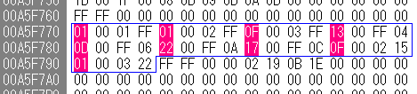
これが強制出撃の条件になります。
各4バイトごとで、
[ユニットID] 00 [分岐条件] [章条件]の形で、FF FFでリスト終了になっています。
まず最初の3つを見てみます。
01 00 01 FF 01 00 02 FF 0F 00 03 FF
これが、エイリークとエフラムの強制出撃の条件です。
[分岐条件]は01,02,03,FFとあり、01は序盤のエイリークのところ、02はエイリーク編、
03はエフラム編でFFは指定無し(無条件)となっています。
また、[章条件]は各ステージIDが条件で、FFは無条件となっています。なので、
01 00 01 FF エイリークが、序盤の時、どの章でも強制出撃
01 00 02 FF エイリークが、エリ編の時、どの章でも強制出撃
0F 00 03 FF エフラムが、エフ編の時、どの章でも強制出撃
その後から後ろは、各章の設定で最後だけ終章の二人強制出撃用の設定があります。
13 00 FF 04 アスレイが、どの編でも、04:第4章 異形の者たちで、強制出撃
0D 00 FF 06 ナターシャが、どの編でも、06:５章 帝国の影で、強制出撃
22 00 FF 0A ターナが、どの編でも、0A:９章 後背の刃で、強制出撃
17 00 FF 0C サレフが、どの編でも、0C:12章 静寂の里で、強制出撃
0F 00 02 15 エフラムが、エリ編で、15:終章 聖魔の光石で、強制出撃
01 00 03 22 エイリークが、エフ編で、22:終章 聖魔の光石で、強制出撃
試しに、14章でヨシュアを強制出撃にさせてみましょう。
20 00 FF 0Eこの形になるのは分かりますね。
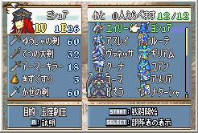
<13>最後に
まだまだ解析部分がかなり多く、イベント命令、イベント発生条件等いろんな章から
調べないといけないです。
ですが、一応これで、マップ改変等はできるかと思います。
あと、マップ改造は最初は少し改変とか、ちょっとずつ大きくしていくのがいいかもしれません。
最後に、日本語がイミフだったり、誤字脱字が本当に多くてすみません。
2009/7/19 Chap@FE8_GILRS